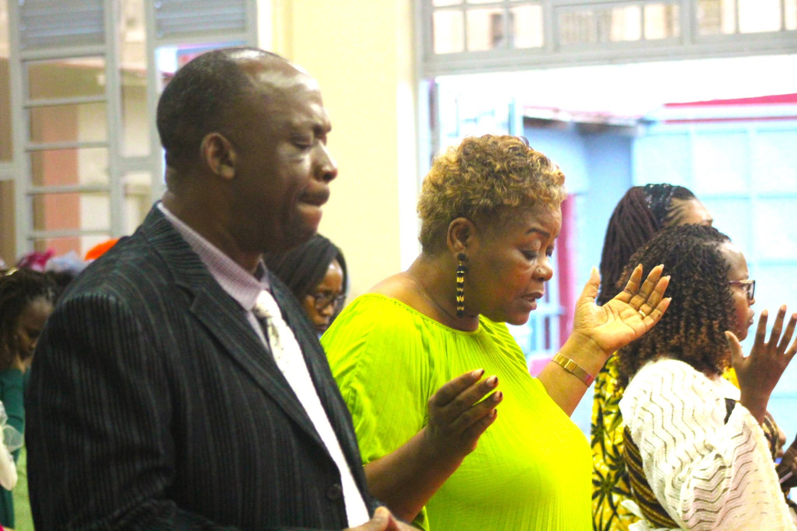
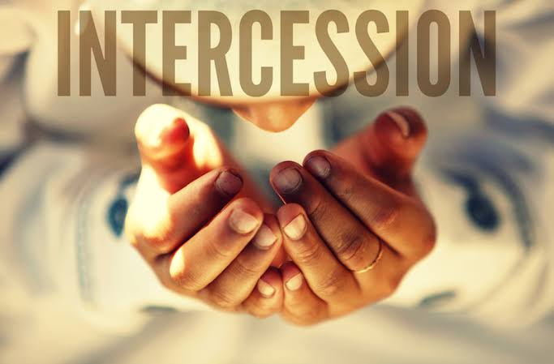
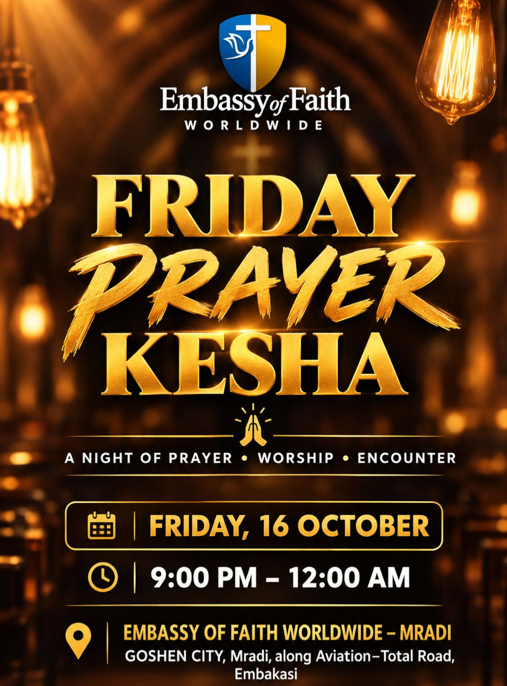
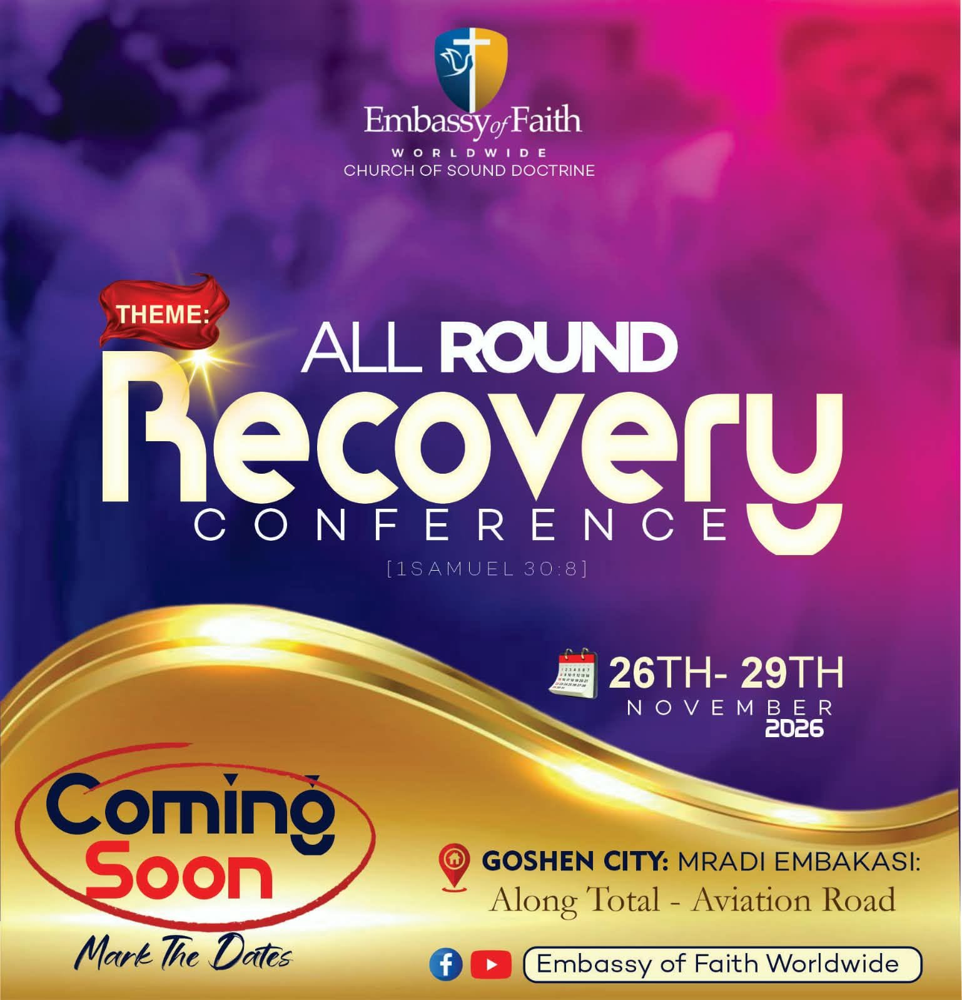
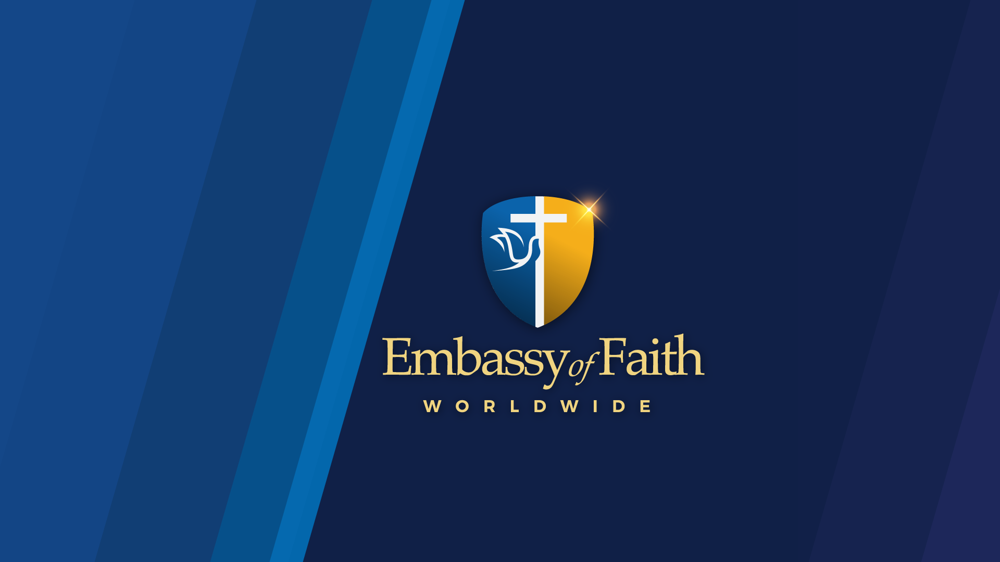
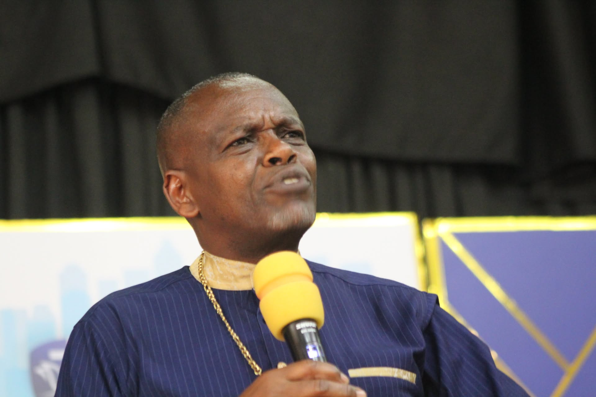
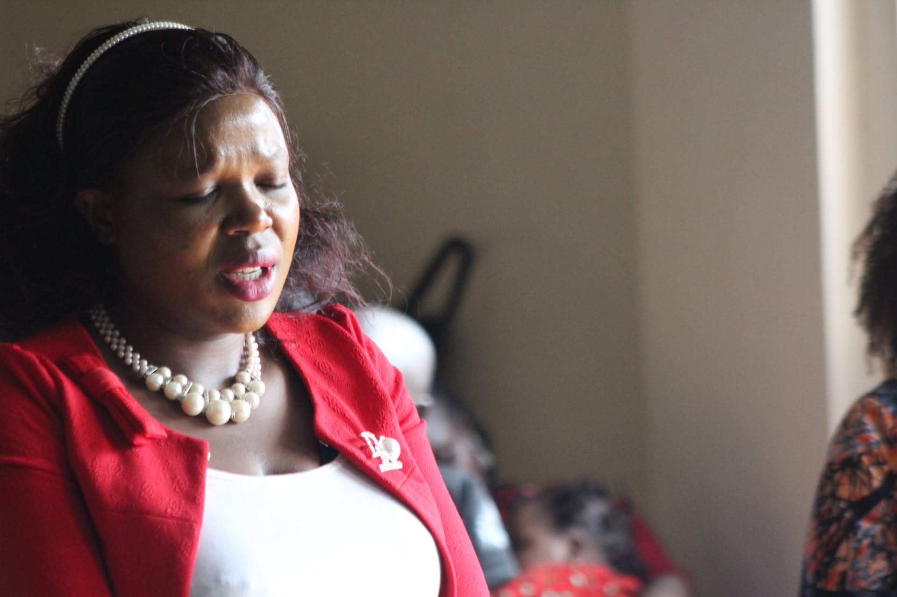

Grow in faith
Make room for reflection, biblical learning and encouragement.

Check back for updates and contact the church team if you need directions, accessibility information or help confirming a gathering.
Make room for reflection, biblical learning and encouragement.

Come together in praise, prayer and the teaching of God's Word.
Discover opportunities to care for others and take part in outreach.
CHURCH CALENDAR
Discover upcoming worship services, prayer meetings, fellowships, conferences and community outreach events. Select a calendar view to explore what's coming up.
Find opportunities to worship, pray, learn, serve and fellowship together.

Encounter God's transforming power through worship, prayer, and the teaching of His Word. Join us for a time of spiritual renewal, faith-building, and fellowship as we grow together in Christ.

Come together in prayer and intercession as we stand in faith for families, the church, our community, and the nations. Join us as we seek God's presence, lift up our needs, and believe for His will to be done. 10:30 AM – 1:00 PM

Set aside the night to seek God's face through heartfelt prayer, worship, and spiritual devotion. Join us for a powerful night of intercession, renewed faith, and fellowship as we trust God for breakthrough and direction.

Experience God's transforming power through His Word as we gather for worship, prayer, biblical teaching and fellowship.
Explore the church's monthly programme, from regular worship to special events and outreach.

Gather for worship, prayer and spiritual encouragement as we strengthen our relationship with God.

Connect with fellow believers, strengthen ministry relationships and participate in fellowship activities.
Preview major programmes, ministry activities and special gatherings planned throughout the year.

Q1Begin the year with prayer, spiritual renewal, vision and ministry planning.
18 JAN 2027 · 9:00 AMEncourage spiritual growth through discipleship, fellowship, teaching and ministry development.
19 APR 2027 · 10:00 AMReach the community through service, evangelism, compassion and practical ministry activities.
18 JUL 2027 · 9:00 AMCelebrate God's faithfulness through thanksgiving, special worship services and year-end gatherings.
13 DEC 2027 · 10:00 AMCheck back for updates and contact the church team if you need directions, accessibility information or help confirming a gathering.

Come together in praise, prayer and the teaching of God's Word.

Make room for reflection, biblical learning and encouragement.
Discover opportunities to care for others and take part in outreach.